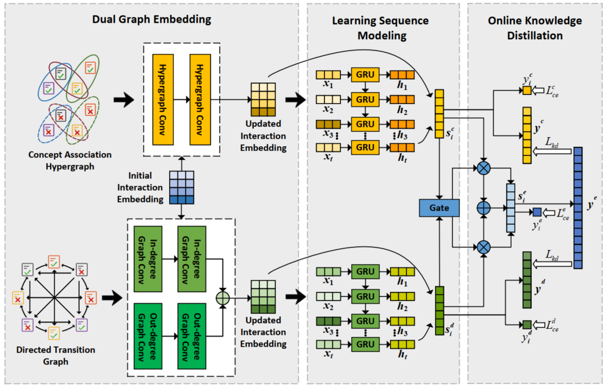
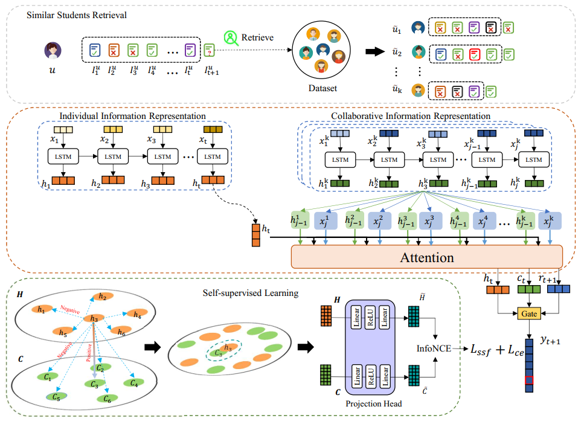
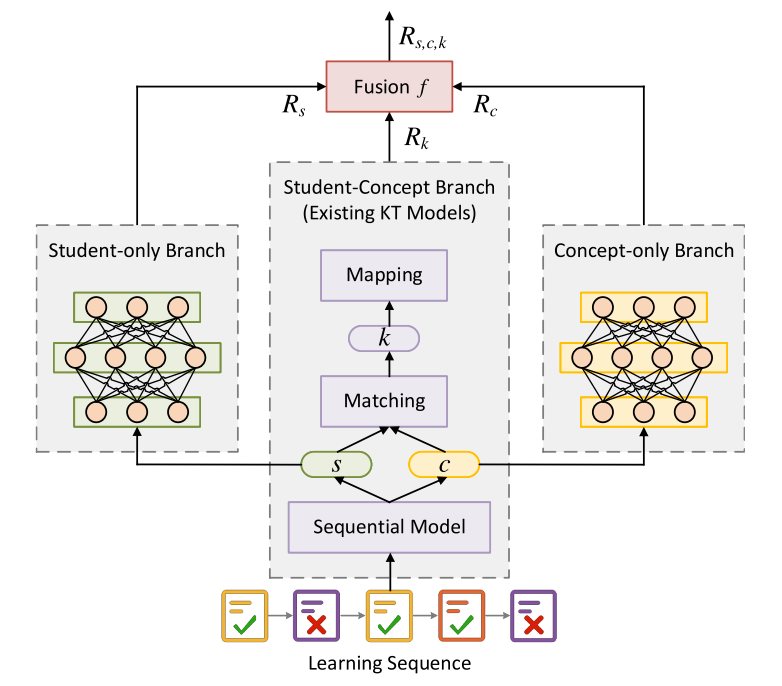

Yumo Yao's Homepage
Short Biography
Yumo Yao (姚羽默) is currently a first-year P.hD student at University of Tsukuba , and under the supervision of Prof. Hai-Tao Yu. He is a member of the II Lab. His major research interests include Knowledge Tracing, LLM and User Modeling.
News
 I became one of the organizers for the SIGIR-AP 2024.
I became one of the organizers for the SIGIR-AP 2024.
- June 2024
Our paper was accepted by IEEE Learning Technologies!
- April 2024
Our paper was accepted by ACM TOIS!
- February 2024
Awarded the JST Doctoral Fellowship!
- November 2023
Admitted as a PhD. student by under the supervision of Hai-Tao!
- October 2023
Passed the Ph.D. Qualifying Exam at University of Tsukuba
- February 2023
Experiences
Doctor's Degree Candidate University of Tsukuba, Japan.
Oct. 2023 - Now
Master's Degree Candidate Shandong University of Finance and Economics, Jinan, China.
Sep. 2020 - Jul. 2023
Bachelar's Degree Candidate Shandong University of Finance and Economics, Jinan, China.
Sep. 2016 - Jul. 2020
Publication
|  |
DGEKT: A Dual Graph Ensemble Learning Method for Knowledge Tracing
C Cui, Y Yao, C Zhang, H Ma, Y Ma, Z Ren, C Zhang, J Ko ACM Transactions on Information Systems. Download: [paper] |
|  |
CoSKT: A Collaborative Self-supervised Learning Method for Knowledge Tracing
C Zhang, H Ma, C Cui, Y Yao , W Xu, Y Zhang, Y Ma IEEE Transactions on Learning Technologies. Download: [paper] |
|  |
Model-agnostic counterfactual reasoning for identifying and mitigating answer bias in knowledge tracing
C Cui, H Ma, X Dong, C Zhang, C Zhang, Y Yao, M Chen, Y Ma Neural Networks. Download: [paper] |